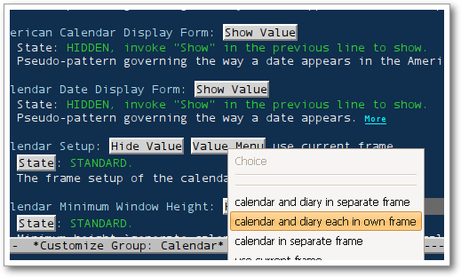

by pluskid, on 2009-02-10, in
by pluskid, on 2009-02-10, in 
 TeX 有 CTAN，Perl 有 CPAN，Python 有 PyPI 和 easy_install （虽然好像至今还不支持自动 uninstall），Ruby 有 RubyForge 和 gem ，诸如 Eclipse 、NetBeans、Firefox 这样的大型软件都有方便的插件/扩展查找和自动安装的功能，更别说各大流行的 Linux 发行版所带的那些包管理器了。然而号称具有无穷可扩展性的超强编辑器：GNU Emacs ，虽然确实具有无数的扩展，但是这些扩展往往各式各样、散落各地，并且正是由于这无穷的扩展性，让各个扩展的安装定制方式千奇百怪，很难统一在一起。我想这也是 Emacs 长久以来一直没有统一的扩展管理的原因之一吧。
TeX 有 CTAN，Perl 有 CPAN，Python 有 PyPI 和 easy_install （虽然好像至今还不支持自动 uninstall），Ruby 有 RubyForge 和 gem ，诸如 Eclipse 、NetBeans、Firefox 这样的大型软件都有方便的插件/扩展查找和自动安装的功能，更别说各大流行的 Linux 发行版所带的那些包管理器了。然而号称具有无穷可扩展性的超强编辑器：GNU Emacs ，虽然确实具有无数的扩展，但是这些扩展往往各式各样、散落各地，并且正是由于这无穷的扩展性，让各个扩展的安装定制方式千奇百怪，很难统一在一起。我想这也是 Emacs 长久以来一直没有统一的扩展管理的原因之一吧。
不过一直被人们说成不“Modern”的 Emacs 近年来也确实有发愤图强，添加了 GTK 界面的支持，新的编码系统，对 XFT 的支持等等。而 EmacsWiki 的兴起也终于让大部分的 Emacs 相关的信息有了一个统一的汇集地，大部分的扩展都可以在上面找到相关的下载和安装指南。不过这离自动管理还有一定的距离。不过，再后来，我们终于有了 ELPA (Emacs Lisp Package Archive) 。
ELPA 是一个集中存放 Emacs Lisp Package 的地方，它同时还提供了一个工具可以自动查找、安装和卸载在 ELPA 中注册的 Package 。实际上，正像前面说的那样，Emacs 的扩展 Package 可以说是各式各样，仅仅要把它们搜集到一起就已经很不容易了，更别说提供全自动的安装和卸载功能了。但是最难的还是要有人去做这个事情吧。一旦有人发起了，建立了一个平台，后面的工作主要由各个扩展的作者将自己的代码按照 ELPA 的规范定制一下并添加到 ELPA 中去。这也是我在这里宣传 ELPA 的原因，让更多人知道这个平台，让它逐渐丰富完善起来。
实际上，现在的 ELPA 中已经包含了诸如 emms 、Muse 以及 nxml 等 80 多个扩展。当然，这个数目实在是不多，不过也正是如此，才需要大家去加以完善。现在 ELPA 提供的功能也比较简单。打开 Emacs ，到它的主页上，把那段代码复制到 Emacs 中 eval 一下就算 ELPA 安装好了。
之后 M-x pakcage-list-packages 就可以查看所有的 Package 列表了，操作方式和 dired 类似，按 i 标记为安装，d 标记为卸载，u 取消标记，x 是执行。在这里安装的扩展，下次重启 Emacs 的时候就会有了。如果检查 ~/.emacs 的话，会发现它添加了这样一段：
;;; This was installed by package-install.el. ;;; This provides support for the package system and ;;; interfacing with ELPA, the package archive. ;;; Move this code earlier if you want to reference ;;; packages in your .emacs. (when (load (expand-file-name "~/.emacs.d/elpa/package.el")) (package-initialize))
ELPA 会在 package-initialize 中加载安装的扩展，如果要在扩展加载之前或者之后做一些定制的话，写到那段代码之前或之后就可以了。这也是 ELPA 有待完善的地方，并不能方便地直接对扩展做一些简单的定制。其实 Emacs 本身已经提供了很强大的“不用写 elisp 代码”的定制方式，就是 customize- 开头的那一堆函数，如下图所示：

不过可惜的是有不少扩展的作者（比如我  ）都偷懒没有提供支持。不过总的来说，ELPA 也算是一个好的开始，希望它能发展壮大，让以后的 Emacser 们能更方便地安装和管理各种扩展。所以，如果你是某个 Emacs 扩展的作者或者维护人员，抽个空把你的扩展加到 ELPA 的索引中去吧。它的文档页面关于添加的扩展要符合什么样的约定写得不是特别清楚，可以直接看 package.el 前面的注释。
）都偷懒没有提供支持。不过总的来说，ELPA 也算是一个好的开始，希望它能发展壮大，让以后的 Emacser 们能更方便地安装和管理各种扩展。所以，如果你是某个 Emacs 扩展的作者或者维护人员，抽个空把你的扩展加到 ELPA 的索引中去吧。它的文档页面关于添加的扩展要符合什么样的约定写得不是特别清楚，可以直接看 package.el 前面的注释。
下面我大致总结一下单文件的扩展需要遵循的一些约定：首先，文件的开始和结束要按照 Elisp 的规范标记出来，并且头部要包含必要的 header 信息，拿 yasnippet.el 来做个例子，整个文件的结构大致上是这个样子：
;;; yasnippet.el --- Yet another snippet extension for Emacs. ;; Copyright 2008 pluskid ;; Author: pluskid <pluskid@gmail.com> ;; Created: 02 Mar 2008 ;; Version: 0.5.9 ;; Keywords: snippet, textmate ;; URL: http://code.google.com/p/yasnippet/ ;; EmacsWiki: YaSnippetMode ;; <<licence here snipped>> ;;; Commentary: ;; <<usages here snipped>> ;;; Code: ;; <<codes here snipped>> ;;; yasnippet.el ends here
其次通常扩展并不会在 Emacs 启动的时候一股脑加载进来，最常见的扩展通常是各种 major mode ，比如 css-mode ，它在 Emacs 启动的时候会做两件事：
- 让 Emacs 知道有
css-mode这个函数的存在。 - 把
css-mode加入到auto-mode-alist中，这样在打开 css 文件的时候能自动调用css-mode。
第一件事情由 autoload 来完成，你只要在代码中定义要实现 autoload 的函数之前写上这样的注释：
;;;###autoload (defun css-mode ()
ELPA 就会自动为其生成相应的 autoload 代码，而为了完成第二件事情，我们用类似的 magic comment 来告知 ELPA ：
;;;###autoload(add-to-list 'auto-mode-alist '("\\.css\\'" . css-mode))这样，ELPA 为为其生成相应的 autoload 文件，包含下面的内容：
(add-to-list 'auto-mode-alist '("\\.css\\'" . css-mode)) (autoload 'css-mode "css-mode" "\ Major mode for editing CSS source code. Key bindings: \\{css-mode-map} \(fn)" t nil)
在 Emacs 启动的时候实际上只有这个文件被加载了，css-mode 被添加到 auto-mode-alist 中，但是如果你没有打开过 css 文件的话，css-mode 的实际的代码是不会被加载的。当第一次打开 css-mode 的时候，Emacs 注意到这是一个 autoload 函数，就会去加载相应的文件，得到函数的完整定义，这实际上是一个 lazy loading 的过程。
另外，如果你需要在本地测试自己的扩展是否和 ELPA 兼容的话，只要用 ELPA 的 package-install-file 命令即可。
实际上之前 ELPA 的作者曾经和我联系过把 YASnippet 加入到其中的问题，不过之前我实在是特别忙，而且也没有把 autoload 搞得太明白，就一直拖了很久，现在又有人提出来，我终于动工添加了支持。yasnippet.el 虽然是一个单独的文件，但是仅有这个东西实际上没什么用处（因为没有任何预定义的 snippet），但是如果要提供 tar ball 的话，好像改动会比较复杂一点，所以我决定把 yasnippet-bundle.el 加入到 ELPA 中。YASnippet 默认情况下是全局打开的，不存在 lazy-loading 的问题，所以除了一些规范性的修改之外，我直接在 bundle 中加入了下面这一句 comment ：
;;;###autoload(require 'yasnippet-bundle)就可以了，因为 YASnippet 本身就是做得（对于不需要定制的用户来说）尽量全自动的。目前正在和 ELPA 的作者交涉，不出什么意外的话，下一个版本的 yasnippet-bundle 就可以直接通过 ELPA 进行安装了。当然如果要使用 tarball 的话，还是要自己去下载安装的，虽然其实也不是很麻烦。

应该很有前途，问题就是emacs发展了这么多年了，工作量应该不会小。
Gentoo的portage安装emacs插件时也用了类似的方法。
1 elpa看来更新很快，我刚才安装的版本中yasnippet已经出现在列表里了。
2 还是因为这么多年emacs的包管理比较混乱，目前elpa检测不到我已经安装了的一些包。当然可能和我用的CarbonEmacs有关系。CarbonEmacs里是给Mac用户提供的一个很方便的版本，里面集成了大量的包。但也不是所有的都检测不到，erc就可以检测到，同样是CarbonEmacs一起打包的muse就检测不到，令人费解。
从google找yasnippet找到这里，呵呵。
想问一下yasnippet的作者，因为c语言和c++语言的indent style有多种，yasnippet是否可以根据不同的indent style进行适当的indent?
如果能，应该进行怎样的配置？
因为现在对elisp还不熟悉，所以懒得rtfsc了…
@fwk
呵呵，rtfm 也可以的，见 Define Snippet#Indenting 。简单地说就是加入
$>的地方会自动缩进，不过这东西在有些 mode 下面会有问题，但是许多时候都工作挺正常的。[...] Free Mind » ELPA: Emacs Lisp Package Archive [...]